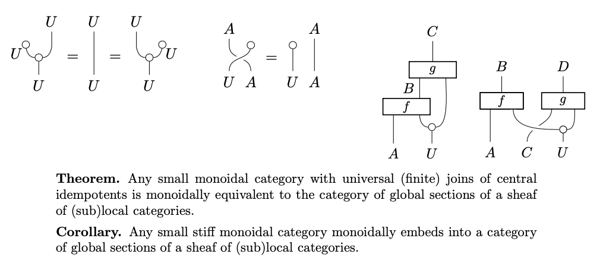
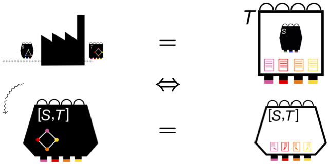
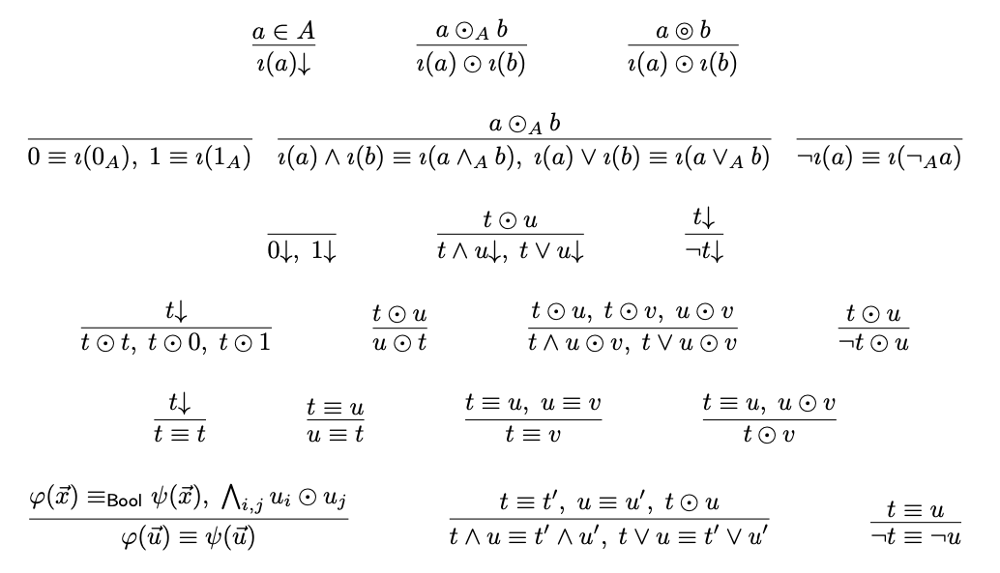
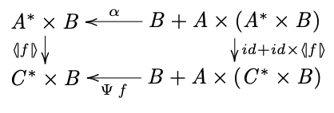
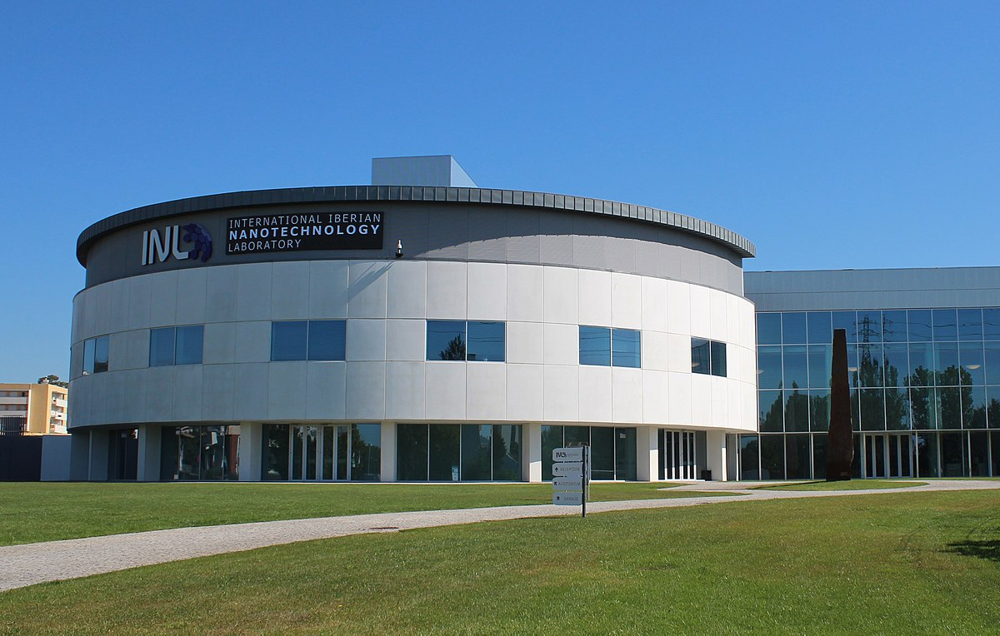
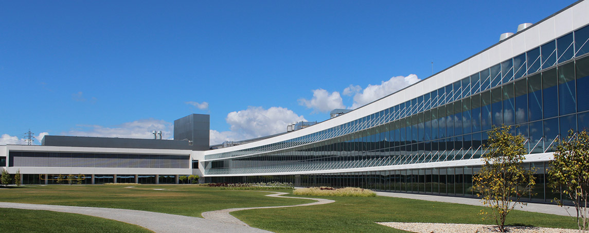

News
22 Nov 2021
Paper Continuous-variable nonlocality and contextuality with Tom Douce, Pierre-Emmanuel Emeriau, Elham Kashefi, and Shane Mansfield accepted for publication in Communications in Mathematical Physics.


16 Sep 2021
Paper Compiling quantamorphisms for the IBM Q Experience with Ana Neri and José Nuno Oliveira accepted for publication in IEEE Transactions on Software Engineering.
14 Jul 2021
Organising with Cihan Okay a parallel session on Mathematical Structures in Quantum Foundations at ENSPM 2021, the national meeting of the Portuguese Mathematical Society. Speakers: Alex Wilce, Ravi Kunjwal, John Selby, and John van de Wetering.

17 Jun 2021
New preprint Sheaf representation of monoidal categories with Chris Heunen.

23 Apr 2021
New preprint Closing Bell: Boxing black box simulations in the resource theory of contextuality with Martti Karvonen and Shane Mansfield. To appear as a chapter in a volume dedicated to Samson Abramsky of Springer's Outstanding Contributions to Logic series.

13 Jan 2021
Paper The logic of contextality with Samson Abramsky published in Proceedings of CSL 2021 (LIPIcs vol. 183).
21 Oct 2020
Preprint The logic of contextuality with Samson Abramsky. To appear in CSL 2021.

2 Nov 2020
PC member for QPL 2021 (18th International Conference on Quantum Physics and Logic).
21 Oct 2020
New preprint Compiling quantamorphisms for the IBM Q Experience with Ana Neri and José Nuno Oliveira.

20 Oct 2020
PC member for CALCO 2021 (9th Conference on Algebra and Coalgebra in Computer Science).
4 Apr 2020
3 Feb 2020
Moved to INL in Braga, Portugal to join the research group on Quantum Linear-Optical Computation (QLOC), led by Ernesto F. Galvão, as a Staff Researcher.


Website by Catarina Soares Barbosa